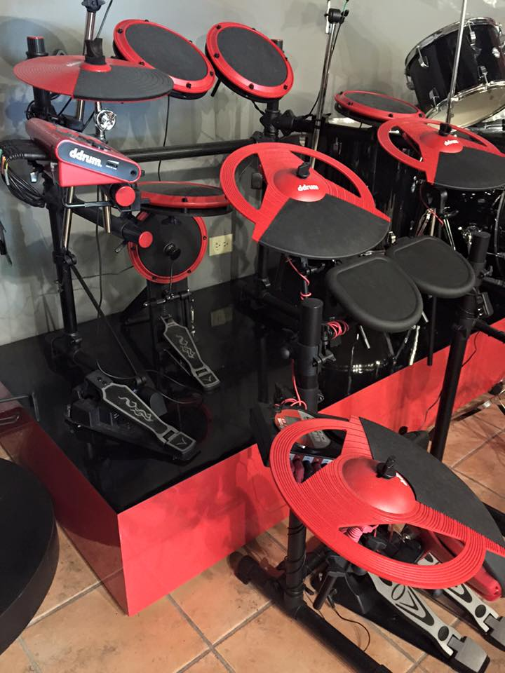
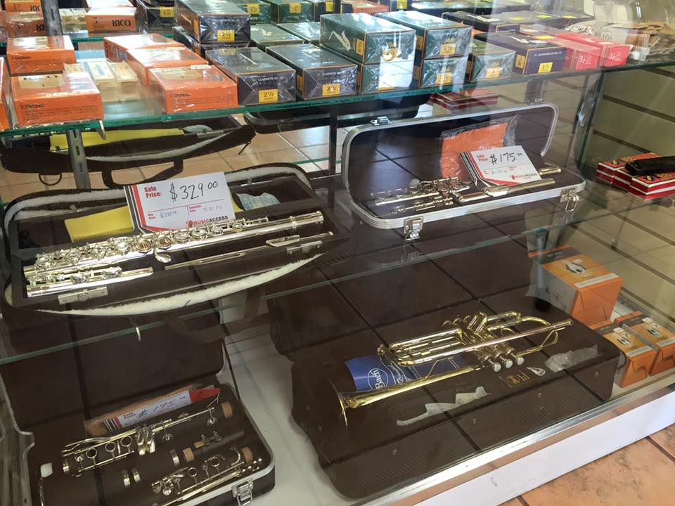
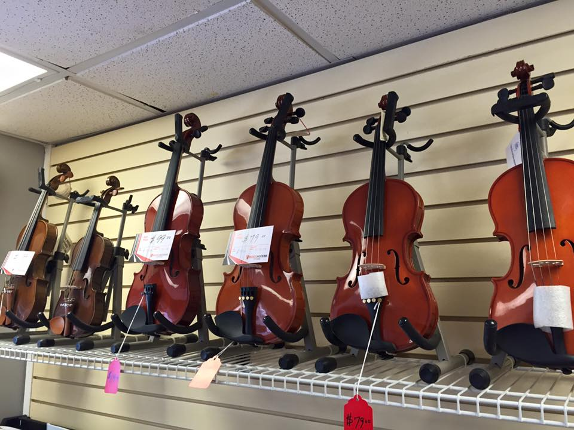

Cada batería en nuestra colección ha sido seleccionada por expertos en música para garantizar que ofrezca una calidad de sonido excepcional y una construcción duradera. Trabajamos con algunas de las marcas más reconocidas en el mundo de la música, como Pearl, Ludwig y Tama, para ofrecer una selección de baterías que se adapten a cualquier estilo y presupuesto.
Desde flautas y clarinetes hasta trompetas y saxofones, nuestra colección cuenta con una gran variedad de instrumentos para satisfacer las necesidades y gustos de cualquier cliente.
En nuestra tienda de música, también ofrecemos una amplia variedad de violines para músicos de todos los niveles. Desde violines para principiantes hasta violines profesionales de alta gama, nuestra colección cuenta con una gran variedad de modelos para satisfacer las necesidades y gustos de cualquier cliente.
En nuestra tienda de música, también ofrecemos una amplia variedad de violines para músicos de todos los niveles. Desde violines para principiantes hasta violines profesionales de alta gama, nuestra colección cuenta con una gran variedad de modelos para satisfacer las necesidades y gustos de cualquier cliente.